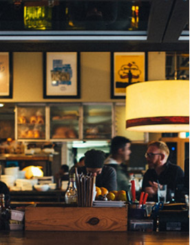
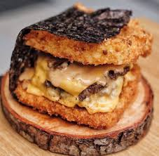
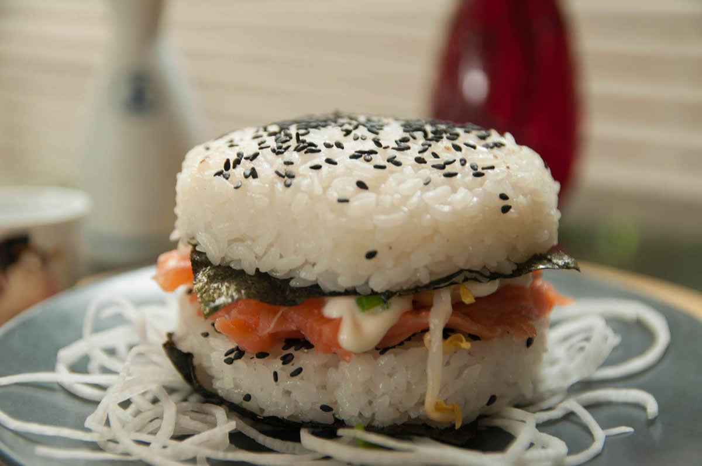

A History Has Written For Nemoshi
Founded since 2017, the name Nemoshi immediately stole the attention of the foodies.
This tiny restaurant in the Panglima Polim area marries burgers and sushi in a dish
called 'Nemoshi.'


